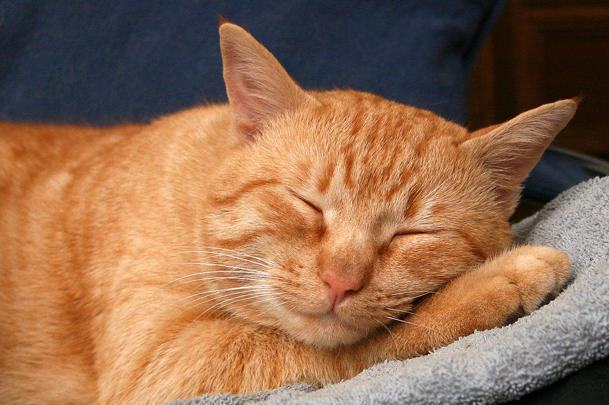

The cat is similar in anatomy to the other felid species:
it has a strong flexible body, quick reflexes, sharp teeth,
and retractable claws adapted to killing small prey like mice and rats.
Its night vision and sense of smell are well developed.
 Go back